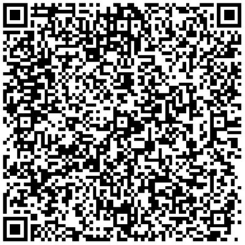
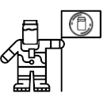

Adding MayoCoin
MayoCoin is a Stellar token available on LOBSTR or
any other
wallet.
You may want to look at our beginner's guide.
Asset Issuer ID: GC5TLOYRAEXMHSJ5H3CZYZVT22IZSDANO2COJLSCSVMZZRS7QUPXM6QT
Asset Code: MayoCoin

MayoCoin - The Off-White Paper
Thank you for getting this far. Like all good things MayoCoin is a work in progress with the flexibility to go in whichever direction the wind takes us. The community will be the key priority and all voices will be heard. It really is an experiment in how far you can get with almost no financial input and a sense of teamwork. There are no secrets here so feel free to fork your own meme coin or sh*t coin. It's been a fun learning curve. So far the community is available on Reddit, Discord or Twitter.
MayoCoin - The Roadmap
1. ✔ Set up website and social media.
2. ✔ Mint MayoCoin.
3. 🔄 Airdrop.
4. 🔄 Poorly veiled bodily fluids memes.
5. 🔄 Faucets.
6. 🔄 Work out steps 7 - 9
7. 🔄 ?
8. 🔄 ?
9. 🔄 ?
10.🔄 Moon (and beyond)! 🚀
Stellar, LOBSTR? I Love Seafood with Lager
Me too, and cryptocurrency makes me hungry. Unfortunately MayoCoin doesn't exist on its own. It is a token on the Stellar network. In order to own MayoCoin you need a Stellar wallet like LOBSTR, funded with 1.6 Stellar Lumens (XLM) (~0.20 USD). Stellar Lumens are available on almost all exchanges and Coinbase often has freebies.
I Need Someone to Squirt Some of the Good Stuff on Me. Help!
You mean you would like to experience the wonder that is our faucet? There's even a bonus faucet at Discord. You'll be drowning in mayo in no time!
Liquidity Staking? I Love some Hellmann's on My T-bone
Close, but no cigar. Liquidity staking is a way of strengthening MayoCoin by placing your hard earned MayoCoin and Stellar Lumens (XLM) in a liquidity pool (LP). This pool powers the automated market maker (AMM) meaning buyers (and sellers) of MayoCoin get a fair price with minimal volatility. There are even big weekly prizes (TBA). I've even made a guide.
A-mayo-zing! We'll Have a Mayo Powered Spaceship in No Time. Where are We Headed?
Slow down, these space missions aren't cheap, but we're getting there. In the meantime you can earn MayoCoin each
week by using your spare computer capacity to map the Milky Way Mayo Way. Find out more on the MayoCoin team page.
NFTs - Nutritious Flavoursome Tartares?
Sadly you'd have to make something that delicious yourself. In the meantime MayoCoin has one non-fungible token (fancy!).

Mayoneer is a limited edition Stellar NFT found on Litemint,
LOBSTR or
any other
wallet. Only ten will be minted to select Mayoneers.
Asset Issuer ID: GC5TLOYRAEXMHSJ5H3CZYZVT22IZSDANO2COJLSCSVMZZRS7QUPXM6QT
Asset Code: Mayoneer
Description: Given to the first ten Mayoneers for services to MayoCoin.
We Love New Mayonatics!
People new to MayoCoin, please use the form below for a delicious free sample. Please add MayoCoin as Stellar asset (trustline) first. If it does not display properly the please use the separate form. If not have a look at our beginner's guide.
Acknowledgements
None of this would be possible without Drelor's tasty Reddit tipbot or Pluton's yummy Discord tipbot.
Cheers!
A big thumbs up to Shyzence🌶 for the new logo. I can almost taste it!
Three cheers for Iammerelyhere for the faucet. Yay!